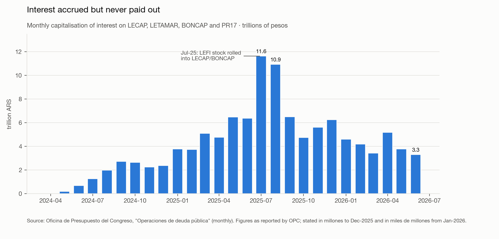
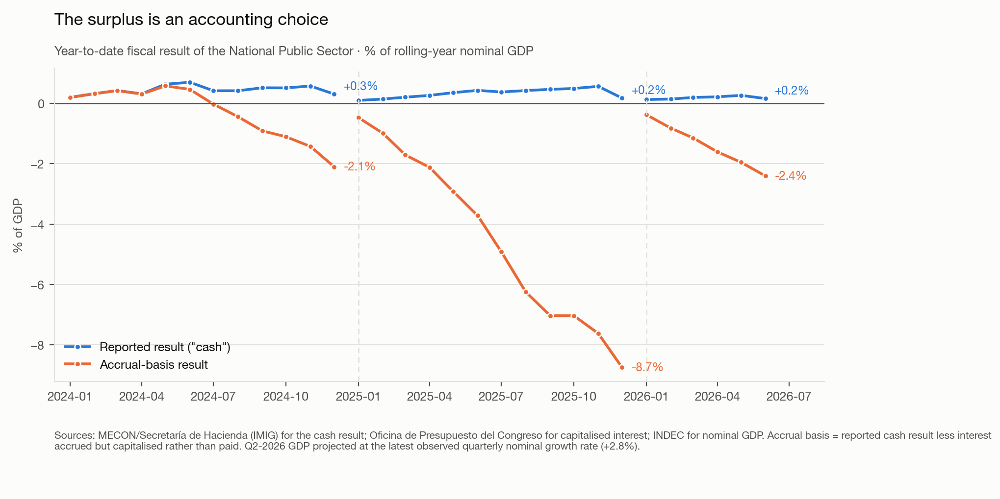
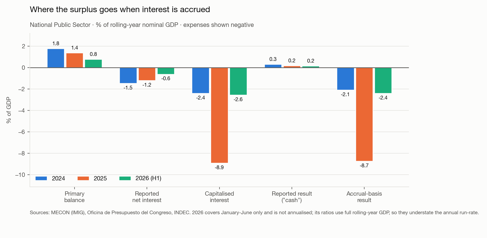
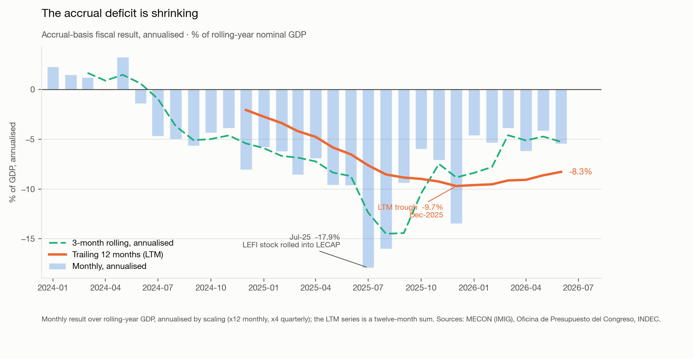
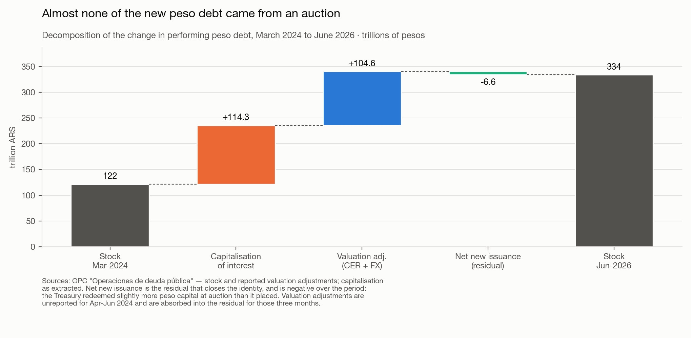
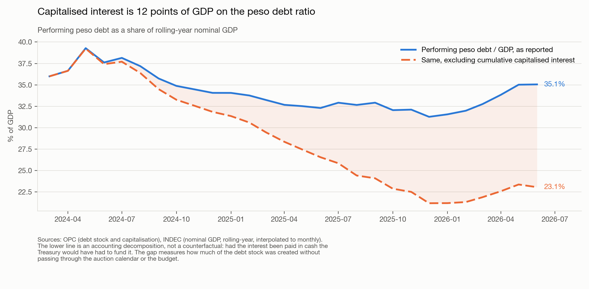

The Milei administration is running a curious (to say the least) bit of accounting and financial engineering to dress up the national accounts. But it doesn’t actually matter, and I think it’s a smart exit to the ticking time bomb they inherited.
A bit of context
A cornerstone of Milei's stabilization plan was the unwinding of the central bank's massive interest-bearing liabilities. In addition to the 3-4pp fiscal adjustment, part of the correction of state finances was the elimination of the quasi-fiscal deficit generated by the central bank. The BCRA, which itself issued pesos to finance the fiscal deficit directly, then re-absorbed those pesos by selling 'letras' to banks. To motivate banks to buy these bills, the BCRA offered yields exceeding deposit rates (and inflation rates), which required yet more peso issuance to cover. This quickly compounded and had created an enormous liability on the BCRA's balance sheet with immediate rollover risk. At the peak, interest bearing liabilities were almost four times the monetary base, interest paid on them by the central bank was 10% of GDP annualized. This sounds so incredibly retarded but sadly it is factual.
The plan to dismantle this problem consisted of first guiding the monetary policy interest rate down to deep negative real territory, thereby endogenously reducing money creation for interest payments. And then to (i) sterilize all remaining interest-bearing liabilities, (ii) end Treasury financing via the central bank. Bank holdings of BCRA liabilities were exchanged for a new overnight treasury bill, the 'Letras de Liquidez del Tesoro' (LEFI). By moving the debt from the central bank's balance sheet to the governments balance sheet, the interest burden shifted to the fiscal accounts where it can be serviced with genuine budget resources. The swap was done at market terms, without defaulting on contracts and the banks voluntarily rolled into the new instruments.
But the sensible question to ask is: if the BCRA couldn’t pay for all this interest, how will the Treasury?
LECAPs: Capitalizable Bonds
As part of the reform of the central banks transmission instruments, and the plan to “hide” these interest payments, these LEFI instruments were entirely rolled into LECAPs.
What is a LECAP, specifically? LECAPs are capitalizable bonds ('LEtras CAPitalizables'), meaning bonds whose interest is added to the loan balance: “capitalized.” The issuer does not pay cash coupons periodically, instead the interest is added to the bond principal and is paid at maturity.
This is where the administration is hiding the interest of the past central bank’s debt.

Cash vs Accrual reporting
What about the fiscal “surplus”? The following is a quote from a footnote of the IMF's July 2025 'First Review Under the Extended Arrangement' Report: “[Deficit] Calculated based on the authorities' reported cash interest payments, which exclude capitalized interest payments recorded below the line.” That capitalized interest is recorded “below the line”, as a stock change rather than as an expense.
The international accounting standard for the government's headline deficit/surplus calculation is to use the accrual method; interest expense should be recorded as it accrues even if no interest is actually paid out.
The Argentine administration never reports an accrual number at all, they don’t even refer to it or make explicit that the budgetary result is on a cash basis. This is why I claim it’s misleading to say the least.


The administration is using LECAPs to defer the interest payments. The Treasury can, in principle, roll principal plus capitalized interests at maturity without any immediate negative cashflow.
That said, Argentina's binding problem is cash-flows, not an unsustainable debt stock. With absolutely no access to international capital markets, the government could not withstand even a small negative cash flow. In fact previous crises were cause by relatively small deficits. These are peso liabilities, and while the interest rate is nominally high, it is also true that inflation is 32% YoY. If it helps the government regularize cash flows and avoids printing pesos, it might be reasonable choice to report deficits on a cash basis.

What it did to the debt stock
Performing peso debt rose from 121.7tn pesos in March 2024 to 333.9tn in June 2026. Decomposing that increase using the OPC's own reconciliation, capitalised interest accounts for 53.8% of it and CER/FX indexation for most of the rest. Net new issuance at auction over the whole period was slightly negative — the Treasury placed less peso capital than it redeemed.

Scaled against output, cumulative capitalisation is worth 12.0 points of GDP on the peso debt ratio. The ratio itself has not deteriorated — peso debt has hovered between roughly 31% and 38% of GDP throughout, because nominal GDP grew at least as fast as the debt. That is the honest counterweight, but it is a disinflation-dependent result rather than a structural one.

Sources
Monthly capitalised interest and the peso debt stock are extracted from 28 consecutive Oficina de Presupuesto del Congreso "Operaciones de deuda pública" reports covering March 2024 to June 2026. Fiscal aggregates, nominal GDP and CPI come from the datos.gob.ar time-series API. The accrual result is the reported cash result less capitalised interest for the same month. The reconstruction reproduces every independently published control total.